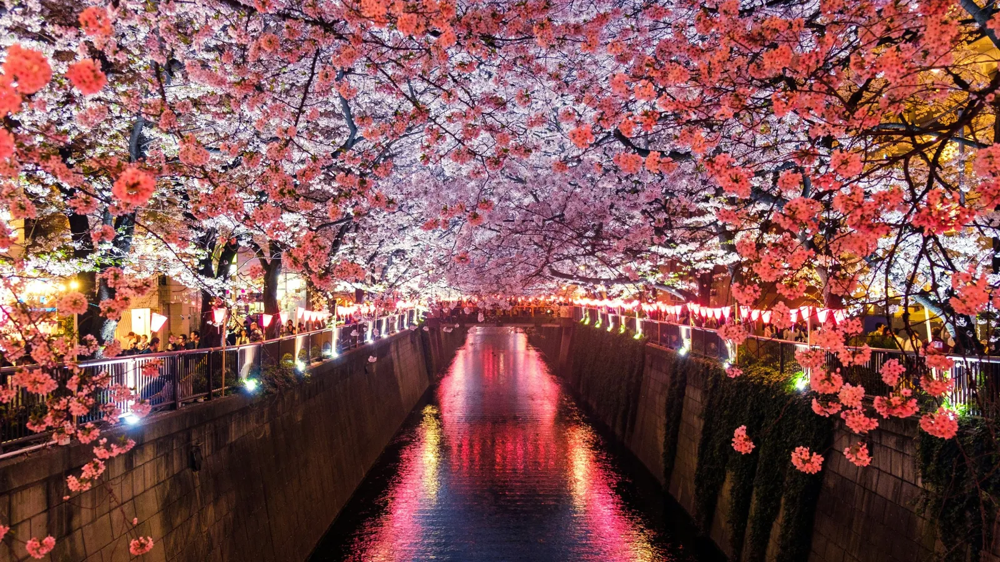

The short answer
In an average year the blossoms reach full bloom in Tokyo around 31 March and in Kyoto and Osaka around 4 April, then move north: Kanazawa around 8 April, Sendai mid-April, Hirosaki around 26 April and Sapporo in early May. These are the long-term averages of the Japan Meteorological Agency, not a 2027 forecast: the first official forecasts arrive between late December and January. Recent springs have come early (in 2026 Tokyo first bloomed on 21 March), so the safest week for Tokyo + Kyoto is roughly 28 March – 6 April 2027.
Expected dates by city (averages)
| City | Full bloom (average) | Good to know |
|---|---|---|
| Okinawa | January – February | A different, deep-pink variety |
| Fukuoka | ~31 March | Often among the first on the main islands |
| Tokyo | ~31 March | First bloom about a week earlier |
| Kyoto / Osaka | ~4 April | Two to five days after Tokyo |
| Kanazawa | ~8 April | Kenrokuen garden and the castle |
| Sendai | ~13 April | Tohoku begins |
| Hirosaki | ~26 April | One of the most beautiful castle parks |
| Sapporo | ~6 May | Golden Week crowds |
Average dates (Japan Meteorological Agency, 1991–2020). Real dates move by a week or more each year: check the forecasts from January.
Best spots in Tokyo
- Shinjuku Gyoen: huge garden, many varieties (so a longer season), entrance fee, no alcohol: the calmest choice.
- Chidorigafuchi: the moat of the Imperial Palace, with rowing boats under the branches. Go early morning.
- Meguro River: a canal lined with trees and lanterns at night, very crowded at weekends.
- Ueno Park: the classic hanami picnic scene, loud and festive, with tarps everywhere.
More ideas for the city in Tokyo in 3 days.
Kyoto, Osaka and Nara
- Kyoto – Philosopher's Path: a canal walk under the trees; start at Ginkaku-ji early in the morning.
- Kyoto – Maruyama Park: the famous weeping cherry, lit up at night.
- Kyoto – Arashiyama: blossoms on the river and the hills; go before 8:00.
- Osaka Castle: thousands of trees around the moats, with night illumination.
- Nara Park: blossoms, temples and the deer, an easy half day from Kyoto or Osaka.
Plan the days with Kyoto in 2 days and Osaka in 2 days.
Missed it? Chase it north
If you arrive after the petals fall in Tokyo, the front is still moving: go up to Tohoku (Hirosaki Castle in late April is spectacular) or Hokkaido in early May. In the other direction, the mountains and lakes near Fuji often bloom a little later than Tokyo: see Mount Fuji day trip.
How to plan when nobody knows the exact week
- Book hotels now for late March and early April, with free cancellation: these weeks sell out months ahead and prices rise.
- Stay at least 10–12 days and split Tokyo and Kyoto: one of the two will almost always be in bloom.
- From January, follow the official forecasts (Japan Meteorological Corporation, Weathernews, tenki.jp) and adjust the order of cities.
- Keep a plan B: early-blooming and late-blooming varieties extend the season in big gardens.
Etiquette and tips
- Never pull or shake branches, and do not climb the trees.
- For a hanami picnic, take a tarp, take your rubbish home and keep the noise down near residential areas.
- Many parks have night illuminations (yozakura): go after dinner, it is a completely different atmosphere.
- Want to sleep where the blossoms are? Compare hotels in Kyoto and in Tokyo, with free cancellation.
Plan your sakura trip
Some links are affiliate links: booking through them costs you nothing extra and helps keep 687 free.
Sakura season, without wasted days.
In 687 Japan you plan Tokyo and Kyoto by stages, with the Shinkansen, the offline map and the weather. If rain or wind brings the petals down early, NOW rebuilds the rest of the day.
Sources
- Japan Meteorological Agency – sakura observations
- tenki.jp – average blooming dates
- Japan National Tourism Organization
- Shinjuku Gyoen National Garden
Checked against these official sites in November 2026. Prices and rules can change: always confirm before you travel.